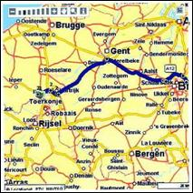
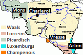
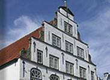
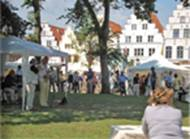
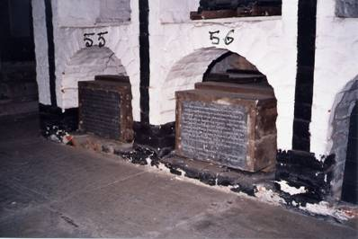
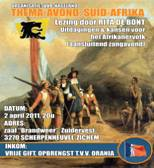
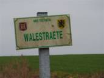

> nieuwsbrief
> 2e trimester
2011
| Bijdragen over: | Tip |
In ruil voor een ongewijzigde basis-bijdrage
van 25 € verzekert u zich ook in 2011 van een abonnement op onze Zannekin
Nieuwsbrief en van het –
reeds 33e – Jaarboek De Nederlanden
‘extra muros’. Als steeds hopen we er andermaal op dat eenzelfde
aantal
leden spontaan deze basisbijdrage afronden tot het ronde bedrag van
30 €.
Zij immers maken het ons mogelijk om extra-initiatieven te ontwikkelen,
als
b.v. dit jaar de publicatie van de brochure Nieuw
Oud Vlaams van de hand van
In onze vorige Nieuwsbrief vroegen
we uw aandacht (op
p. 8) voor volgende uitgave: Von Sinaai
nach Jerichow. Auf den
Spuren der Flamen zwischen Harz und Fläming. Protokollband. ISBN 978-3-00-032950-0.
Uitgave Studium Hallense e.V., Postfach 11 01 07, D. 06015 Halle
(Saale). Prijs
(inclusief verzendkosten): 35,90 €. Rekening IBAN: DE29 8009 3784 0001 5067 73 – BIC: GENODEFIHAL. De zes
laatste karakters van de IBAN-code (hier vet
weergegven) kwamen te vervallen. Waarvoor onze excuses.
Robaais
-
andermaal
Het
is helemaal niet mijn bedoeling een
blijkbaar
onblusbaar vuur nog op te poken, MAAR... een pitbull bijt zich nu
eenmaal bis
zum bitteren Ende in zijn onderwerp wast, en vandaar...twee
interessante
bemerkingen in verband met Robaais
- Robeke.
1) Tijdens
de tv-reportage van 11 april 2010 van
Paris-Roubaix, met als verslaggevers Michel Wuyts en Karl Vannieuwkerke
(lang
in Boezinge gewoond, nu in Diksmuide), zei de laatste op zeker ogenblik
wat
volgt: "Cancellara alleen aan de leiding...nu nog
2) Toevalllig zoek ik een reisweg op www.routenet.nl,
en wat ziet mijn lodderoog? Op het (zie hierbij) kaartje staat onder
"Toerkonje" (Tourcoing) ... Robaais
(en niet "Robeke"). Zijn
die "Hollanders" ook al niet op de hoogte... of analfabeten? Tot op
heden heeft niemand me, ook niet met de allergeleerdste
pseudo-argumenten ervan
kunnen overtuigen, dat "Robeke" niets meer is dan een
"maakwoord" – beweert andermaal Guido Vandevyvere uit Menen.
De Zannekin
Ontmoetingsdag 2011:
zal op
19 november doorgaan
te Burtscheid nabij Aken en in
het teken
staan van
de Sint-Nicolaas
van Myra-vieringen. Meer terzake in de
volgende Nieuwsbrief. Let
op de “t” in de plaatsnaam: er
bestaat in de omgeving van Aken immers ook een plaatsnaam Burscheid
(zonder
“t”) en daar zoeken wij het niet.
Al
zeven eeuwen Frans in Wallonië
 Van de 8e tot
de 13e eeuw gebruikte men in
Wallonië uit het Latijn voort-gekomen lokale streektalen, les dialectes
d'oïl vooral Picardisch
en Waals.
Daarna ging
men hier, geheel uit vrije wil, en terwijl het gebied bij het Duitse
Rijk
hoorde, het Francien
gebruiken. Dat is de voorloper van het Frans, dat ook uit het Latijn
voorkomt.
Hierdoor kregen de Walen voor het eerst iets gemeenschappelijks. Walen
waren
toen nog geen Walen; het begrip wallon verschijnt pas in de 15e
eeuw in
geschreven teksten; in 1844 duikt
Nota van de Nieuwsbrief-redactie:
de bewering over het
“geheel uit vrije wil” kiezen voor het Frans dient niet slechts met een
korreltje, maar met een heel vat zout genomen te worden.
______________
Bron:
Zannekin-Studieuitstap
Zaterdag
30 april 2011
Daguitstap
naar Frans-Vlaanderen vanuit
Nieuwpoort
Thema:
Over en rond de heilige
Vlaamse berg,
veldslagen en bosgeuzen.
Programma:
08.00 uur: samenkomst op
het Marktplein te Nieuwpoort
08.15 uur: vertrek busrit
via De Moeren en Houtem naar Hondschoote.
08.30 uur: 2e opstapplaats
NMBS-station te Veurne. Van daar uit verder naar Hondschoote, alwaar
koffie met
gebakjes in Ons Kot en bezoek aan het stadje, met
Sint-Vedastuskerk, het
stadhuis, windmolens, de saainijveheid (scotta), kloosterveld met
kapel,
hagenpreken met Sebastiaan Matte en Jacob de Buzere, bosgeuzen o.l.v.
10.45 uur: busrit via Herzeele en Wormhout
naar Cassel.
11.15 uur: Cassel, ontvangst door het
stadsbestuur op
de Mairie, korte lezing over Cassel door de eeuwen heen, het Reuzelied
en over
de Casselse predikant Petrus Dathenus.
12.15 uur: Vlaams middagmaal verdeeld over
het Kerelshof en 't Kasteelhof, de
hoogst gelegen taverne-spijshuis van
Frans-Vlaanderen.
14.15 uur: Groep A: Musée
de Flandre in ’t
Landhuys - Groep B: Monu-ment op de Casselberg, windmolen, prachtige
vergezichten, OLV-kerk, radio Uylenspieghel.
15.15 uur: Groep A: Monument op de
Casselberg,
windmolen, prachtige vergezichten, OLV-kerk, radio Uylenspieghel -
Groep B: Musée
de Flandre
16.15 uur: busrit van Cassel via de
historische
slagvelden naar Noordpeene.
17.00 uur: Noordpeene,
bezoek aan de obelisk die herinnert aan de Slag aan de Peene
(1677),
uitleg over Niklaas Zannekin en zijn boerenleger, het graf van
Tisje-Tasje, hulde aan kanunnik Camille Looten; vijfuurtje met zoet
en/of zout
en een drankje in de Herberge van de Peene - Plaetse –
Noordpeene
19.30 uur: Terugrit via
Veurne naar Nieuwpoort; aankomst daar om 20.30 uur.
De
deelnameprijs bedraagt
50,00 € (alles is inclusief) voor Zannekin-leden en hun
huisgenoten. Niet-leden 60 €.
Aanmelden: hetzij d.m.v. e-post: maurits.cailliau@skynet.be
, hetzij schrif-telijk bij het secretariaat, Paddevijverstraat 2, B. 89
Ieper
en dit telkens met opgave van na(a)m(en), adres en telefoonnummer van
de
deelnemer(s) + vermelding van hun opstapplaats, hetzij Nieuwpoort,
hetzij
Veurne en gelijktijdige betaling van de deelnameprijs op een
van onze
rekeningen (zie onderaan p. 1) en dit vóór 15 april. Niet te
vergeten:
“Wie eerst komt, eerst maalt.”
Friedrichstadt, Noord-Friesland
Paludanushaus
“Die Holländerstadt”, zo presenteert
Friedrichstadt in
Noord-Friesland in Duitsland zich. Via de webstek www.friedrichstadt.de
kunt u het nodige lezen over de geschiedenis, over de musea en de
stadswandeling en de rondvaart door de grachten. Ook kunt u daar een
boekje
bestellen: Friedrichstadt. Ein
historischer Stadtbegleiter door Christiane Thomsen (ISBN
978-3-8042-1010-3) (2001, 2e druk 2009).
Markt
met
trapgevels in Friedrichstadt
Het boekje telt 72 bladzijden en bespreekt
de
geschiedenis en religie waar de Nederlandse een belangrijk aandeel in
hebben
gehad. Verder staan er vele (zwart/wit) foto’s in van historische
gebouwen.
Zie ook het artikel Het
Deense Holland Noord-Friesland en Neder-land
van Thomas
Steensen vertaald en geïllustreerd door Marten Heida in het Zannekin
Jaarboek
32 De Nederlanden ‘Extra Muros’ van 2010.
Enkele jaren terug bezochten we dit zo typisch “Hollands” aandoend stadje naar aanleiding van een meerdaagse reis,”op zoek naar sporen van ons Nederlands verleden”.
De mythe van de Spaanse invloed…
Jean-Marie
Gantois
Sedert het verschijnen van Le
Lion de Flandre - Zuidvlaams heem hebben wij pauzenloos de mythe
van de Spaanse invloed in onze Nederlanden aan de kaak gesteld. Een
historisch
probleem moeten wij nog oplossen en dat is hoe dit geloof is ontstaan
dat zelfs
onze landgenoten heeft aangetast. Wij lezen het volgende bij een van de
voorvechters van het Vlaamse regionalisme: "Sint-Winoksbergen sluimert
rondom zijn Spaanse belfort. De stad behoorde 500 jaar tot de graven
van
Vlaanderen en vervolgens 100 jaar tot de Bourgondische hertogen, 80
jaar tot
het Oostenrijkse Huis en 112 jaar tot Spanje. Hiervan heeft het meer
nog dan
Duinkerke een onuitwisbaar stempel bewaard." Door een eigenaardig
verschijnsel tellen van dit lange verleden alleen de 112 jaar van
Spaans
bewind. Aldus aangemoedigd laten de vulgarisators hun vreugde de vrije
loop:
gans Sint-Winoksbergen is "een juweel van de Spaanse Renaissance"
(?), Brugge heeft langsheen zijn straten slechts "Spaanse huizen".
Overal waar men een bouwwerk met trapgevel ziet zo kenmerkend voor de
noordelijke architectuur van Atrecht tot Reval en Riga daar brult men
over het
Spaanse wonder terwijl men vergeet dat Spanje net als alle zonnige
landen het
domein van het terras en het platte dak is. (...) De poort van Robaais
te
Rijsel? "De kleine kantelen die boven haar uitsteken doen denken aan de
wapens van Kastilië". Wedden dat u daaraan niet had gedacht. En die
Spaans
zegt, zegt Moors! Deze poort van Robaais is versierd met geverniste
tekeningen
en bakstenen: "ornamenten ingevoerd door de Moren in Spanje en
overgebracht naar Vlaanderen." Doen onze belforten niet aan minaretten
denken? Meen vooral niet dat méquene (serveerster) is afgeleid van
meideken:
"het is een Arabisch woord dat langsheen het Spaans in het Frans is
gekomen". (...) De reuzen, voornaamste element van onze carnavals, een
van
de meest originele thema’s van onze folklore zijn vanzelfsprekend van
Spaanse
oorsprong. De Processie van het Heilig Bloed in Brugge is evenzeer nog
een
manifestatie van het Andalousische genie in onze provinciën. De
braderie,
spijts zijn naam (van het Vlaams braden) is een importartikel uit
Kastilië. Uw
naam eindigt op o of twee o's? : Flipo, Deroo, Lalo, Salengro,
Redregoo? U
stamt af van een of andere hidalgo, ongetwijfeld. Thorez, Detrez,
Potez,
Durnez? allemaal Spaanse namen. Het volk zegt mi voor moi: hispanisme!
Een
Vlaamse hoeft maar zwarte ogen te hebben een Vlaming bruin haar:
"Spanjaard". (nadat Gantois al deze onzin heeft weerlegd en heeft
aangetoond dat de Dietsers daarentegen de Spaanse cultuur diepgaand
hebben
beïnvloed komt hij tot deze contrapunt. De vertaler)... Toch hebben wij
iets aan
Spanje te danken. De objectiviteit gebiedt het ons te erkennen. "Het
was
in 1496. Men had zoëven het huwelijk besloten tussen de Aartshertog van
Oostenrijk, Vorst der Nederlanden Philips de Schone en de Infante
Johanna van
Aragon. Om hun dochter naar de Nederlanden te brengen waar haar
bruidegom op
haar wachtte rustten de katholieke koningen in de haven van Laredo in
Vizcaya
een vloot uit van twintig zeilen. Deze vloot bereikte na stormachtig
weer
Middelburg en vandaar begaven de prinses en haar hof zich met kleine
dagmarsen
naar Rijsel. Daar zou de aartsbisschop van Kamerijk het huwelijk op 18
oktober
inzegenen. Maar helaas! Het edele gevolg van haar die zou worden
Johanna de
Waanzinnige, moeder van Keizer Karel, bracht met zich mede de Lues
Ispanica, als
bruidsschat kan men zeggen. En daarom duidde men deze ziekte in Gent en
Leiden
als Spaansche Pokken aan." Dit is de enige vorm van verwantschap tussen
Spanjaarden en Dietsers volgens een opstel in de Courrier
Médical te Brussel van 4 maart 1938. Victor Hugo
heeft ongetwijfeld niet dit bedoeld met zijn gedicht: Noble
Flandre ou le Nord se réchauffe engourdi Au soleil de Castille et
s'accouple au Midi! (Edel Vlaanderen waar het
verstijfde Noorden zich warmt aan de zon van Kastilië en paart met de
Midi).
Jean-Marie Gantois (1944). Vertaling:
Dietbrand van
Diemen.
Willem II van der Marck (1542–1578), heer van Lummen, Admiraal van de watergeuzen, Stadhouder van Holland, enz.
Willy Alenus,
Oostende
Als alles naar wens verloopt
dan verschijnt in het 2011- jaarboek van Zannekin, De
Nederlanden ‘Extra Muros’, nr. 33, een bijdrage met betrekking
tot “De aanloop naar de Opstand” (1558–1568), waarin de jonge ‘Lumey’
zich
reeds aankondigt als de man die op 1 april 1572, op Alva, d.i. het
boegbeeld
van de gehate Spaans- Habsburgse overheersing, “sijnen Briel”
zal buitmaken. De verovering van het Zuid- Hollandse
eiland Voorne, het eerste, kleine stukje bevrijd Nederland, ging
gepaard met de
tragedie van de “martelaren van Gorcum” (9 juni 1572). Een mensenleven
was ook
toen niks waard.
De naweeën van dit kleine
hoofdstuk “vaderlandse” geschiedenis, zijn tot heden identificeerbaar,
zoals
deze navorser al tien jaar lang ondervindt. Hij slaagde erin de
lijkkist van
Lumey terug te vinden (in de crypte onder de voormalige
Kapucijnenkloosterkerk
van Enghien (Edingen) en ze zelfs te fotograferen, maar tot vandaag
weigeren de
adellijke verwanten de toelating de kist te openen voor
DNA-identificatie. En
dit terwijl wij al het forensisch laboratorium van het UZ van de UA
(Antwerpen)
voor de goede zaak aan boord hadden kunnen halen. Maar ook de
burgermeester van
het Waalse Enghien, mevrouw Florine Pary-Mille, die dus ook
verantwoordelijk is
voor alle graftomben van de gemeente, haastte zich om aan de kant van
de
adellijke familie te gaan staan. Zonder de deskundigen te raadplegen?
Wat is de reden van bestaan
voor deze korte bijdrage ?
Op 1 mei 1578 stierf Lumey in Luik. Naar luid van de
eigentijdse bronnen werd hij plechtig begraven ‘op’ het priesterkoor in
de oude
parochiekerk van Lummen, “als heer van de heerlijkheid, met een
‘monument’ op zijn
graf”. Hij kwam daar te liggen in het gezelschap van zijn vader en
grootvader
en van twee of meer bloedverwanten.
Daar
bleven drie doodskisten
bijna DRIEHONDERD jaar in vrede rusten - de parochiekerk werd in 1865
afgebroken - totdat zij op 16 oktober 1872 werden overgebracht, dat
heet translatie, naar de crypte van de
toenmalige Kapucijnenkloosterkerk in Edingen. De middelerwijl ontwijde
kerk is
bovendien privé bezit geworden en er zou een juridische betwisting
bestaan
m.b.t. de erfdienstbaarheid (‘servitude’) van de crypte met haar 57
lijkkisten
en dit ten behoeve van de bloedverwanten (van Arenberg-de Ligne).

De graven in de
crypte van de
voormalige Kapucijnenkerk te Edingen
De streng wetenschappelijke
vaststelling van de FEITEN, zoals zij hier en hieronder worden
beschreven, die
heeft de geschiedenis in de eerste plaats te danken aan de onverdroten
navorsing van Lummense heemkundigen en dit in de tweede helft van de
twintigste
eeuw. Het resultaat van hun op-zoekingen, voornamelijk in de bestanden
van het
Rijksarchief Hasselt en contact met de familie van Arenberg, zorgden
voor een
doorbraak.
Op 25 november 2004 slaagde
deze auteur erin en dit dankzij de mede-werking van de ACA-directie
(Arenberg
Foundation) in Edingen en onder de deskundige begeleiding van de
stadsgids, een
langdurig bezoek te bren-gen aan de crypte onder de voormalige
Kapucijnenkloosterkerk, waar 57 doodskisten, waaronder de nummers (55),
(56) en
(57), inderdaad onder een dikke laag stof voor het nageslacht en tegen
de
vergetelheid worden bewaard.
Uit het
raadplegen
op internet van Wikipedia en ook
andere naslagwerken, kan worden afgeleid dat wat wij hier en elders
publiceren
niet altijd aan hun aandacht ontsnapt. Zij weten eindelijk
dat Lumey op 1 mei
Ziehier
dan, mede ten gerieve van de naslagwerken, een kritisch-historische
samenvatting van de feiten die het leven, de dood en de schaduw van
Lumey
beheersen, van 1568 tot 1900. Maar let wel op. Wat Ben Lindekens zegt
over de
bokkenrijders, dat geldt ook voor hun gouwgenoot Lumey, hij is een
“uncanny
ghost”, een dwalende geest die op zoek is naar reïncarnatie. Hij laat
je nooit
meer los.
Reconstructie van de
chronologische opeenvolging van de feiten
1568 (23 mei
1568,), slag bij Heiligerlee,
begin van de 80-jarige oorlog, d.i. de militaire opstand tegen het
Spaans-Habsburgse,
maar wettige gezag, - de veldslag heeft plaats tussen de Spaanse
troepen, o.b.v.
Jan de Ligne (†23 mei 1568), graaf van Arenberg1 door zijn
huwelijk met
Margaretha2 (achter-achterkleindochter van Everhard II van
Arenberg,
“le sanglier des Ardennes” en Maria, vrouwe van Lummen)3 en
anderzijds
de bosgeuzen en huurlingen van Oranje, o.b.v. Lodewijk van Nassau en
Adolf van Nassau
(†23 mei 1568), beiden waren broers van Willem van Oranje.
1572, inname
van den Briel (1
april 1572) en verovering van Zuid-Holland door Lumey, admiraal van de
watergeuzen en later kapitein-generaal, vervolgens stadhouder (lieu-tenant) van Holland voor Willem van
Oranje.
9 juli
1572,
terechtstelling van de 19
martelaren van Gorcum, in Brielle.
1578 (1 mei),
Lumey sterft in Luik
- naar luid van eigentijdse bronnen werd hij ‘op’ het priesterkoor in
de oude parochiekerk
van Lummen plechtig begraven.
1675,
zaligverklaring van de martelaren
van Gorcum (Rome).
1698, 23 jaar
na de zaligverklaring
volgt de eerste identificatie van de inhoud van de doodskisten in de
grafkelder
van de heren van Lummen.
1865, d.i.
het jaar van de afbraak
van de oude parochiekerk van Lummen; tweede identificatie van de inhoud
van de lijkkisten.
1867,
heiligverklaring van de martelaren
van Gorcum.
1868, 300e
verjaardag van de
slag bij Heiligerlee - dit bijna samenvallen van beide verjaardagen
(1867–1868)
leidde, in Nederland, tot heftige pole-mieken tussen protestanten en
katholieken
- deze laatsten met J.A. Alber-dingk Thijm op kop.
1872, 300e
verjaardag van de verovering
van den Briel door Lumey.
1872 (16
oktober), translatie van
drie doodskisten van Lummen naar de crypte onder de kerk van het
voormalige Kapucijnen
klooster te Edingen.
1881 (28
februari), de drie kisten
belanden in de crypte onder het koor van de Kapucijnenkloosterkerk.
Waar zij
hebben gestaan, van 16 oktober 1872 tot 28 februari 1881, werd niet
opgezocht
en is ook niet echt belangrijk. Maar het kan wel worden opgezocht.
Boven de
Moerdijk moet je niet
lang zoeken naar een Lumeystraat, -laan of –plein. In Lummen, waar het
voorvaderlijke kasteel van de Van der Marcken nog staat te pronken, is
er
voorshands nog geen spoor van een dergelijke hulde. Toch zwaait Lummen
met het
blazoen van van der Marck als gemeentewapen. En het blazoen van
Herk-de-stad
bestaat uit, links, het wapen van Loon, rechts het wapen van Arenberg
(voor
Schulen).
___________________
Noten
1 Graaf Jan de Ligne ligt ook begraven in
de crypte
onder de kerk van het voormalige Kapucijnenklooster te Edingen, met het
volgende
grafschrift: “Ici gist hault et puissant Messire Jean de Ligne, prince,
comte Darenberg
et du St Empire, lequel mourut le 23 May 1568, en la bataille de
Hercane (!), estant
Gouveneur de Frize, Overisel et Gruninck, combattant contre le comte
Lodevick de
Nassau, rebel au Roy et à Dieu et Sa Majesté. Priez Dieu pour son
âme.”
2 Margaretha
was de achter-achterkleindochter van Everhard II van Arenberg,
‘le sanglier des Ardennes’ en Maria van Lummen, via haar vader Robrecht
III, haar
grootvader Robrecht II en haar overgrootvader Everhard III van Arenberg.
3 Lumey was
de achter-achterkleinzoon van Everhard II van Arenberg, ‘le sanglier
des Ardennes’ en Maria van Lummen, via zijn vader Jan II, zijn
grootvader Jan I
en zijn over-grootvader Willem I, ‘met den baerde”; Everhard III en
Willem I waren
broers, uiteraard.
Marten Heida
Een mogelijke “proefpolder”
O zeker, taal is een
belangrijk identificatie-element.
Maar wanneer een bepaald taalgebied doorsneden wordt door een
staatsgrens - als
gevolg waarvan de gebieden aan weerskanten daarvan in taalopzicht een
eigen
“leven” zijn gaan leiden - dan komt dat element niet tot zijn recht,
vervreemd
als men van elkaar geraakt is. Gelukkig is er dan nog een factor die
dit proces
overstijgt. Ik doel op het historische facet dat minstens zo belangrijk
is als
identificatie-element. Naar mijn mening is inspelen op het historisch
besef van
toenemende betekenis voor onze grensgebieden. Graag wil ik deze
stelling
verdedigen.
In Nederland heeft men een
aantal jaren geleden een
commissie ingesteld die zich moest bezinnen op de weg die ingeslagen
moest
worden om het geschiedenisonderwijs weer op de onderwijskaart te
zetten. Het
resultaat moest een antwoord zijn op de klacht dat het met dit vak
slecht
gesteld was. Deze bezinning heeft de samenstelling van een canon met
een
toegesneden aantal “vensters” tot gevolg gehad.
Niet iedereen in Nederland was
gelukkig met deze
uitkomst. Zo stelden “ingewijden” ernstige tekorten vast als gevolg
waarvan
naar hun - vooral - bescheiden mening belangrijke onderwerpen in het
geheel
niet of onvoldoende aan de orde werden gesteld. In veel gevallen hadden
deze
vermeende tekortkomingen te maken met opvattingen die stoelden op de
eigen
levensbeschouwing.
Toch is het niet allemaal
kommer en kwel, want deze
landelijke canon heeft ook een positief effect gesorteerd. En dat wel
op het
regionale vlak. Om tegenwicht te bieden aan het opgehangen landelijke
geschiedenisbeeld - dat in Nederland trouwens altijd al sterk Hollands
gekleurd
was - heeft men in diverse streken een eigen canon opgesteld met de
daarbij
behorende “vensters”. Het is een poging om te bereiken dat langs deze
weg meer
aandacht geschonken gaat worden aan de geschiedenis van de eigen regio.
Tot de noodzakelijke
versterking van de eigen
identiteit in de regio die gevormd wordt door de Gelderse Achterhoek en
het
Westmunsterland denk ik dat beklemtoning van het historische facet een
belangrijke bijdrage kan leveren. In het kader van de bezinning hierop
zie ik
een belangrijke taak weggelegd voor historici uit de beide
bovengenoemde
deelgebieden. Om zo doelgericht mogelijk te werken zal er zowel
aansturing als
begeleiding nodig zijn. Daarvoor zouden de instituten in Doetinchem
(Staring
Instituut) en Vreden (Landeskundliches Institut Westmünsterland)
ingeschakeld
dienen te worden. Onder deze supervisie moet gepoogd worden te komen
tot een
grensoverschrijdende historische canon met “vensters” die uitzicht
geven op
“wat we van elkaar in geschiedkundig opzicht moeten weten”. Ik besef
dat er
menige struikelsteen uit de weg geruimd zal moeten worden. Anderzijds
denk ik
dat de inspanningen het waard zijn om deze vorm van
identiteitsbevestiging vorm
en inhoud te geven.
Nauw hiermee verbonden is er
nog een ander aspect.
Niet voor niets heb ik in het kopje het woord “proefpolder” gebruikt.
Immers
bij welslagen van dit project zal er ongetwijfeld een stimulerend
effect vanuit
gaan en in andere grensregio’s mensen aansporen zich op deze opzet te
beraden.
Ik ben zeer benieuwd of ik een
begaanbare weg ben
ingeslagen. Blijft over de vraag: Wie gaat de uitdaging aan om deze
vorm van
grensoverschrijdend bezig zijn handen en voeten te geven?
De Stichting Zannekin is aan geen enkele
politieke partij
gebonden en ze wenst dit ook zo te houden. Zannekin
steunt wel initiatieven, die volledig kaderen binnen de doelstelling
van de
vereniging. Hierna volgen een drietal activiteiten die we ten zeerste
willen
aanprijzen.
Prisma
groot woordenboek
Afrikaans en Nederlands
Presentatie
anna
23 april 2011. Graag nodigen wij u
uit voor de presentatie van het Prisma
groot woordenboek Afrikaans en Nederlands - kortweg anna - op zaterdag
23
april 2011 om 13.00 uur, in het Tropeninstituut,
Amsterdam.
Ruim
tien jaar lang is - onder hoofdredactie van prof.dr. Willy Martin -
gewerkt aan de totstandkoming van dit unieke woordenboek. Een unicum
inderdaad,
omdat de nauw verwante talen Afrikaans en Nederlands niet gescheiden (A-N versus N-A) worden behandeld, maar
in één deel, tezamen (ANNA). Zo zie je in één oogopslag
de
verschillen én de overeenkomsten.
Met steun van onder meer de
Stichting ZASM hebben academici in
Zuid-Afrika, België en Nederland een woordenboek tot stand gebracht van
ruim
2200 pagina's, met 60.000 trefwoorden, een prachtig naslagwerk, dat
uitnodigt
tot lezen en vergelijken van Afrikaanse en Nederlandse uitdrukkingen en
gezegden.
ANNA zal feestelijk worden
gepresenteerd tijdens de jaarlijkse ledenvergadering van de Nederlandse
Zuid-Afrika Vereniging
(NZAV). Adriaan van Dis zal het
eerste exemplaar in ontvangst nemen.
Programma
·
14:30-15:00
Inloop boekpresentatie
·
15:00-15:50
Lezing Adriaan van Dis
·
15:50-16.20
Presentatie Prisma groot
woordenboek Afrikaans en Nederlands. Sprekers: dr. J. Donner
(voorzitter ZASM,
hoofdsponsor van dit project) en prof. dr. W. Martin (hoofdredacteur)
·
16:20-16:25
Aanbieding van het eerste
exemplaar aan Adriaan van Dis
·
16:25-17:30
Receptie
Graag vernemen wij of u
aanwezig zult zijn bij deze boekpresentatie. U kunt zich opgeven door
een
mailtje te sturen aan de heer drs. G. van den Berg, vandenberg@zuidafrikahuis.nl
Het woordenboek is te koop
tijdens de receptie.
Prisma
groot woordenboek Afrikaans en Nederlands ISBN
9789049102562
·
Gebonden,
2228
pagina's
Thema-avond
Suid-Afrika
Op
2 april
om 20.00 uur houdt Rita de Bont een lezing
over het thema Uitdagingen en kansen voor
het Afrikanervolk. Aansluitend wordt er een zangavond gehouden.
Dit
gebeuren gaat door in de zaal ‘Brandweer, Zuidervest te 3270
Scherpenheuvel.
Binnenkort
organiseert N-VA Brussel een gespreksavond over Frans-Vlaanderen. Op 16
april
2011 krijgen ze hoog bezoek uit Frans-Vlaanderen. Bestuursleden van de
Michiel
De Swaenkring komen er ver-ellen over hun ervaringen. De sprekers zijn
Jacques
Fermaut, Michel Lieven, Régis d Mol, Karel Appelmans – allemaal lid van
de
Michiel De Swaenkring - en historicus Eric Vanneufville.
Zij zullen het hebben over de
strijd
voor het behoud van taal, gewoonten en cultuur. Maar ook over de
toekomstplannen op het gebied van onderwijs en het inventariseren van
de vele
Vlaamse straatnamen en herbergen met mooie Vlaamse namen. Wat
verwachten zij
van de Vlaamse en Nederlandse regeringen, van de Nederlandse taalunie?
Afspraak om 19.00 uur in het
gemeenschapscentrum De Markten (Oude
Graanmarkt, Brussel). De inkom is gratis!
Edouard
Michielsstraat 51,
B – 1180 UKKEL / Brussel
e-post: leo.camerlynck@skynet.be
- t. 00 32
485 63 02 27